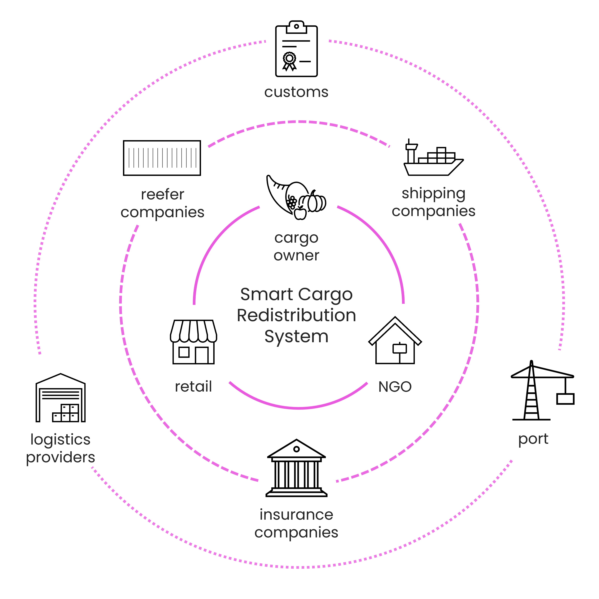

Smart Cargo Redistribution (SCR)
Systems Designer & Strategist
SCR es una "capa de rescate" conceptual diseñada para interceptar fallos logísticos antes de que se conviertan en desperdicio. Al sincronizar el monitoreo en tiempo real con un marco de redistribución multilateral, el sistema permite a los propietarios de la carga desviar productos en riesgo hacia redes humanitarias. Esta arquitectura desplaza el estándar industrial de la "gestión de pérdidas" hacia la "recuperación de activos", creando un puente basado en datos entre el transporte marítimo y la seguridad alimentaria global.
Contexto
La pérdida de alimentos en la logística marítima representa una paradoja de eficiencia crítica: aunque los contenedores refrigerados transportan productos de alto valor y densidad nutricional, se estima que generan alrededor de 1.4 millones de toneladas de residuos anuales. Actualmente, ante un fallo térmico, la carga se liquida a un menor precio o se incinerar para evitar costes de almacenamiento portuario (demurrage) u otras complicaciones. SCR explora la brecha sistémica entre estas alertas técnicas y la eliminación final de productos que aún son nutricionalmente viables.
Actualmente en una fase exploratoria, el proyecto continúa evolucionando como un marco de diseño orientado a la salud, el bienestar y la conexión social desde una perspectiva comunitaria.
Desafío
¿Cómo transformar los fallos logísticos en oportunidades sociales, logrando que el rescate de la carga sea económicamente más viable que su eliminación?
El reto consistió en conceptualizar un marco de apoyo a la decisión que convierta el "rescate" en una opción más atractiva que la incineración o la liquidación de bajo valor. El sistema se diseñó para:
- Brindar opciones viables: Proporcionar alternativas rentables que empoderen a los propietarios de la carga para asumir la responsabilidad sobre el impacto de su decisión.
- Invertir los incentivos económicos: Comparar el "Coste Total del Desperdicio" y los "Déficits por Liquidación" frente al "Valor Total del Rescate" (créditos fiscales, capital social y ahorro en tasas de eliminación).
- Orquestar una segunda vida para los productos: Cerrar la brecha entre la rigidez de los protocolos marítimos y la agilidad requerida por las redes de asistencia humanitaria.
Framework propuesto
Smart Cargo se plantea como un puente de inteligencia estratégica entre la logística y la acción humanitaria. La arquitectura incluye:
- Sistema de alerta inteligente: LUna capa lógica que consume datos de monitoreo IoT para señalar envíos en riesgo comercial pero aún aptos para el consumo.
- Motor de triple alternativa: Una interfaz de apoyo a la decisión que genera tres escenarios de salvamento con un análisis comparativo de coste-beneficio para cada uno.
- Lógicas de redistribución: Un flujo de trabajo basado en datos, para articular servicios coordinados a lo largo de todo el proceso, para ejecutar la redirección de la carga.
Aprendizajes clave
- Alineamiento de incentivos: La verdadera sostenibilidad ocurre cuando la "ruta verde" es también la más rentable. El diseño para el rescate debe mitigar primero la presión financiera del propietario.
- Interoperabilidad: La innovación no requiere nuevo hardware; requiere un puente de software y legal que permita que los datos existentes activen una acción social.
- Elección de opciones estratégicas: para promover la responsabilidad del cliente, transformando un fallo logístico en una oportunidad.
- Resiliencia a través de los Datos: Exploración de cómo los sistemas de datos a gran escala pueden ser diseñados para la resiliencia social y el impacto tangible.
Notas
Capa complementaria neutral: Marco agnóstico que se integra en el ecosistema marítimo actual sin reemplazar a los proveedores existentes.
Integración sin fricciones: Se apoya en APIs existentes para activar la ayuda humanitaria sin necesidad de instalar hardware propietario.
Impacto socio ambiental: Diseñado como un marco de innovación que equilibra la viabilidad económica con la sostenibilidad ambiental.